벨기에 이야기 (6) - 은화와 모기
게시: 2026-08-17T06:30:18+09:00
전투 현장의 병사들이 급여를 못 받을 경우 어떤 일이 발생할까요? 현대적인 상식으로는 어차피 전투 현장에서 돈 쓸 일도 없으니 당장은 아무 일이 없어야 합니다. 그러나 당시 병사들의 급여와 배식 체계는 오늘날과는 많이 달랐습니다. 기본적으로 당시 스페인 테르시오 일반 병사들은 당시 미숙련 노동자 정도, 혹은 그보다 살짝 높은 수준의 급여를 받았습니다. 목숨을 걸어야 하는 일인데도 그렇게 급여가 낮은 수준이라니 약간 의외라고 생각하실 수 있겠으나, 고대 그리스 시절부터 현대 미군에 이르기까지 그 정도 수준이 일관적으로 유지되고 있습니다. 물론 현대 미군은 대학 교육비 지원이라든가 시민권 획득이라든가 하는 부차적인 당근도 제시하고 있습니다만, 멀쩡한 중산층 가정 출신에 대학도 나온 백인 청년이 군에 입대하여 머나먼 중동 등지에서 허무하게 목숨을 잃는 경우는 그렇게 일반적이지는 않지요. 언제나 군대는 가진 것은 몸뚱아리 하나뿐인 가난하고 절박한 청장년들의 최후의 보루가 되는 경우가 많습니다. 그 정도의 급여로도, 합스부르크 왕가는 스페인은 물론 이탈리아나 독일, 심지어 아일랜드나 저지대 현지에서도 병사들을 모집하는데 큰 어려움을 겪지는 않았습니다. 그만큼 서민들의 삶은 항상 어렵다는 뜻입니다.
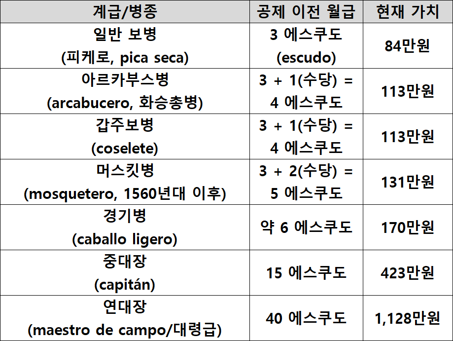
(이 표는 당시 16세기 후반 테르시오 병사들이 받던 월급여를 정리한 것입니다. 병종별로 꽤 차이가 큰 것을 보실 수 있습니다. 16세기의 에스쿠도(escudo)는 이탈리아 금화인 두카도(ducado)와 동일하게 취급되었는데, 금화 하나당 금 3.38g(순도 약 91.7%), 즉 순금 약 3.1g을 함유했습니다. 당시의 산업 생산력과 물가 수준은 지금과는 많이 다르고, 요즘은 금 가격도 환율도 지나치게 급등했으므로 현재 가치로 환산하는 것이 정확하지는 않습니다.)
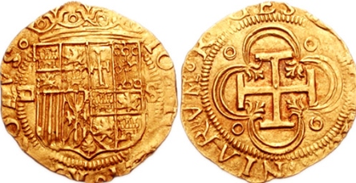
(16세기 초반에 스페인 세비야에서 발행된 에스쿠도 금화입니다. 직경 24mm, 무게 3.38g입니다. 대략 우리나라에서 2006년 이전에 사용되던 구형 10원짜리 동전 정도의 무게와 크기를 생각하시면 됩니다.)
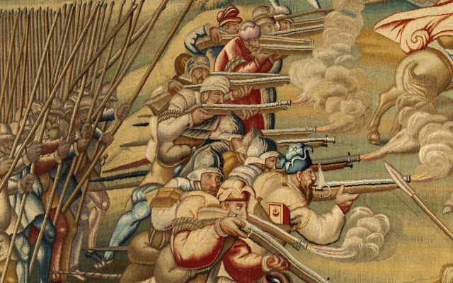
(16세기 초반 테르시오 부대의 진정한 위력은 저 화승총 부대에서 나왔습니다. 이 그림은 1535년 북아프리카 튀니스(Tunis)를 침공한 합스부르크군의 테르시오 화승총병들의 모습입니다. 이 그림은 거대한 연작화의 일부로서, 스페인이 아니라 오스트리아 빈의 미술사 박물관에 전시되어 있습니다.)
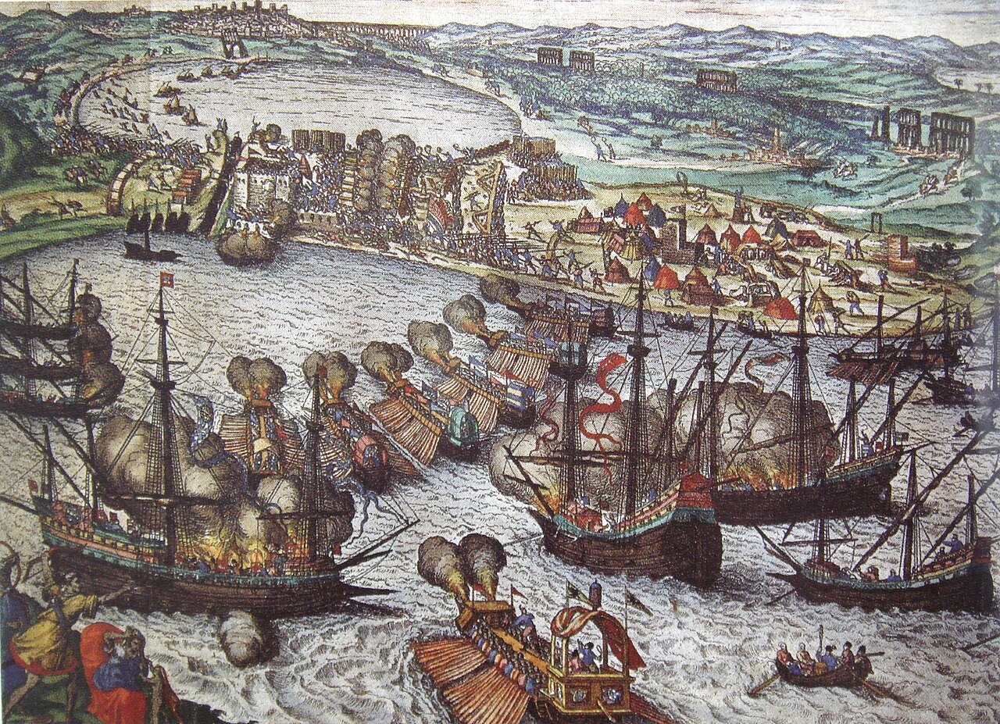
(이 그림은 1535년 튀니스의 외항인 라 골레타(La Goletta)를 공격하는 합스부르크 함대의 모습입니다. 당시 스페인-오스트리아의 통합 황제였던 카를로스 5세는 그리스와 이탈리아 등 남유럽뿐만 아니라 북아프리카 등 지중해 전체에서 오스만 투르크와 치열하게 격돌하고 있었습니다. 저 1535년 합스부르크의 튀니스 침공은 16세기 최대의 수륙양용 작전이었는데, 유럽의 아프리카 식민지화가 저때 이미 시작되었다고 생각할 수도 있으나 실은 튀니스에 해군 기지를 두고 이탈리아와 스페인을 침공하려는 오스만 투르크에 대해 선제 공격을 가하는 성격이 강했습니다. 저 1535년의 튀니스 정복은 널리 알려진 중요 사건은 아닌데, 그 이유는 6년 후인 1541년 벌어진 알제리 전투에서 합스부르크군이 대패했고, 결국 1569년 튀니스도 오스만 투르크에게 다시 빼앗겼기 때문이었습니다.) 실제로는 병사들이 반짝이는 에스쿠도 금화 3개를 다 받지 못했습니다. 당시 병사들에게는 부대에서 하루 0.68kg 정도의 밀과 호밀을 섞은 빵, 그리고 맥주나 와인 등의 주류가 표준적으로 배급되었습니다. 또 무기는 기본적으로 군에서 지급되었지만 군복 등은 병사들이 돈을 지불해야 했습니다. 이건 나폴레옹 시대의 병사들은 물론 현대 미군도 마찬가지라서, 소총과 헬멧, 배낭, 탄띠 등의 장구류는 군 기지별로 병사들에게 '대여'되지만 군복과 군화, 군모 등은 병사들이 자기 돈으로 사야 합니다. 아무튼 그러다보니 급여로 약속받은 3개의 금화 중 2/3 정도는 받아보지도 못하고 배식비 및 피복비 등으로 공제되었습니다. 그래도 최소한 한 달에 금화 한 닢은 받았을 것 같습니다만, 그렇지 않았습니다. 실제 병사들에게 주어진 것은 이런 은화였는데, 그 은 함유량도 표준량보다 적은 저품위인 경우가 많았습니다.
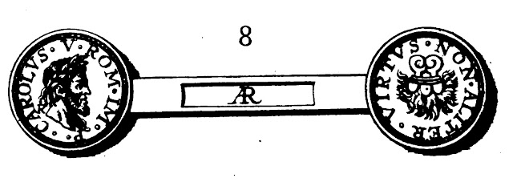
(이건 16세기 초반 나폴리에서 주조된 칼리노(Carlino) 은화입니다. 당시 병사들은 금화는 구경도 못했고, 대개는 이런 저품위 은화를 받았습니다. 이건 박물관 전시용으로 앞면과 뒷면을 한꺼번에 보기 위해서 2개의 은화를 중간에 막대로 연결해놓은 것입니다. 새겨진 인물은 당시 합스부르크 황제인 카를로스 5세입니다.)
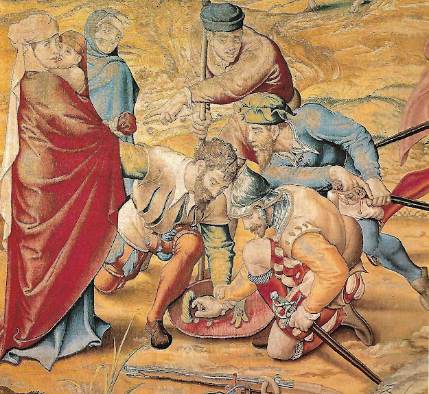
(이것도 1535년 튀니스를 침공한 테르시오 부대원들의 모습입니다. 여기서는 병사들이 노예로 팔기 위해 포로로 잡은 무슬림 민간인들을 걸고 방패 위에서 주사위를 굴리며 도박을 하고 있습니다. 아마 저 병사가 속임수를 쓰려다가 '동작 그만, 손 모가지 날아가고 싶어?'라며 잡히는 모습 같네요. 하루살이 같은 전쟁터 병사들의 삶에서, 몇 안 되는 낙인 저런 도박을 하기 위해서는 은화 몇 푼이라도 있어야 했습니다.) 그런데 당장 급여가 지불 중단된다? 그렇다고 아직 할부가 끝나지 않은 군복을 벗겨가거나 배식이 중단되는 것은 아닐 테니 당장 큰일이 나지는 않았을 것 같은데, 실제로는 큰일이 날 수밖에 없었습니다. 원래 병사들은 남은 1에스쿠도 어치의 은화로 채소, 고기 등의 부식이나 술을 사는 경우가 많았습니다. 그래서 아예 규정으로도 1개 중대당 3명의 종군 상인이 따라다닐 수 있게 되어 있었고요. 실제로는 정규 상인 3명 외에 추가적인 잡상인들이 부대 주변에 진을 치고 있었습니다. 그런데 그 모든 거래의 근원적인 돈줄인 스페인 본국 정부에서 부도가 선언되고 급여 지불이 중단되었다는 소식에 종군 상인들이 모두 외상 거래를 거부하기 시작한 것입니다. 상황이 그러니 병사들에게 기본 배식인 빵 1.5파운드도 주지 못하는 경우가 속출했습니다. 그렇게 부도가 난 사업장에서는 당연히 노동자들이 하나둘씩 떠나버립니다. 군대도 마찬가지라서 당장 굶게 된 병사들 사이에서는 탈영이 속출할 것 같았는데... 당시 저지대에 파병된 테르시오 부대의 경우는 달랐습니다. 그들 대부분은 스페인인, 이탈리아인, 아일랜드인 등으로서 고향에서 정말 멀리 떠나온 사람들이었습니다. 거기서 탈영해봐야 갈 곳도 없었습니다. 테르시오 병사들 대부분은 탈영하지 않고 자기들끼리 뜻을 모아 저지대의 부유한 도시들을 약탈하기 시작했습니다. 처음에는 반란 도시를 함락시켰을 때 지휘관의 만류를 뿌리치고 민가를 약탈하는 수준이었으나, 나중에는 스페인에 충성하는 도시까지 약탈했습니다. 그런 약탈 행위에는 지휘관이 묵인을 넘어 앞장 서서 기획하고 실행에 옮기는 경우도 많았습니다. 지휘관도 급여가 중단되어 불만이 팽배한 것은 마찬가지였거든요. 그 대표적인 사례가 바로 1576년 11월의 안트베르펜(Antwerpen) 약탈 사건이었습니다. 안트베르펜은 그때까지만 해도 전혀 반란을 일으킬 이유가 없는 카롤릭 우세의 부유한 항구 도시였습니다. 반란은 커녕 스페인 합스부르크 왕실에 대해 충성을 표시하기 위해 개신교 반란군을 적대시했고 알바 공작에게 세금도 꼬박꼬박 잘 내는 편이었습니다. 당연히 그 도시의 내성(citadel)에는 스페인군이 주둔하고 있었습니다. 그런데 수비대인 자신들은 당장 먹을 것도 제대로 공급받지 못하는 상황에서 바로 눈 앞의 저지대 플랑드르인들이 자신들에 대한 외상 거래를 거부하면서 자기들끼리 잘 먹고 잘 사는 모습은 더 큰 분노를 불러일으켰습니다. 그런 상황 속에서 내성 주둔 스페인군의 지휘관 산초 다빌라(Sancho d'Avila)가 앞장 서서 저 돈 많고 째째한 안트베르펜 시민들을 약탈하기로 마음 먹습니다. 그는 소수의 독일 용병들로 구성된 시내 주둔 수비대도 약탈에 가담시키려 했으나, 그 지휘관인 폰 에버슈타인(Otto IV von Eberstein) 백작이 거부하고 오히려 안트베르펜 시장에게 경고를 주었습니다. 결국 내성의 스페인군 6천이 수천 규모의 독일 및 왈롱 용병들과 시민군 1만으로 구성된 수비대를 습격하며 전투가 벌어졌는데, 언제나 헝그리 정신이 승리하는 것인지 왈롱 용병들이 배신을 해서인지 결국 스페인군이 일방적인 승리를 거두었고 안트베르펜은 철저히 약탈과 살인 강간을 당해야 했습니다. 이 사건에서 최저 7천, 많게는 1만7천의 시민들이 목숨을 잃었다고 전해집니다. 당시 안트베르펜 인구가 약 10만 정도였으니, 이는 엄청난 피해였던 것입니다.
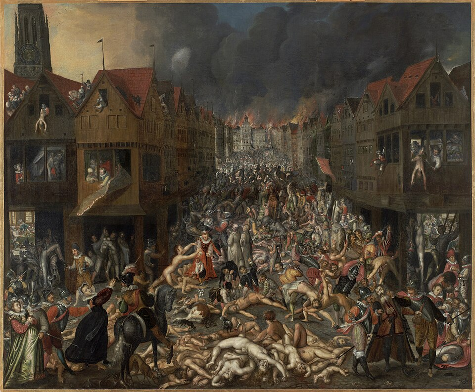
(이 그림은 당시 살았던 무명 화가가 묘사한 안트베르펜 약탈입니다. 실제 사건이 발생한지 몇 년 후인 1585년 경 그려진 것으로 추정됩니다.)
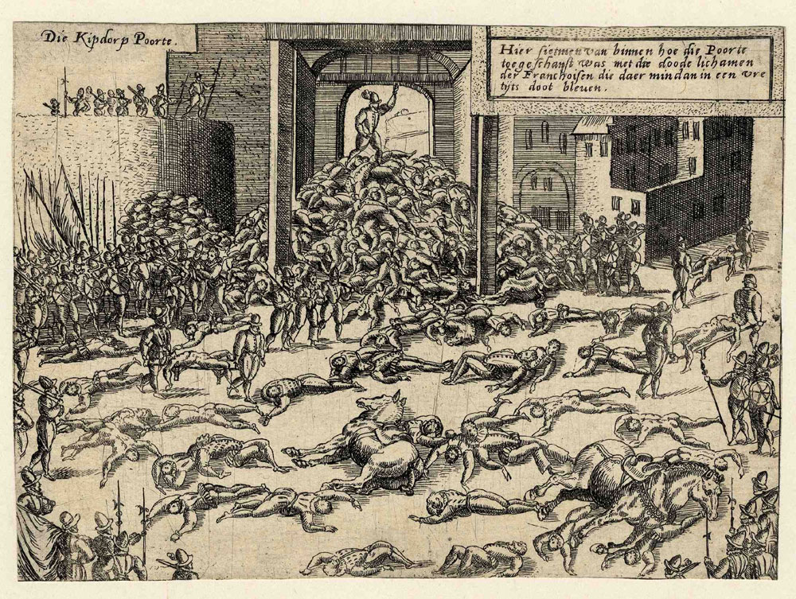
(안트베르펜 약탈을 그린 다른 그림입니다. 도망치던 주민들이 성문 앞에서 첩첩이 쌓일 정도로 떼죽음을 당한 것이 공통된 묘사입니다.)
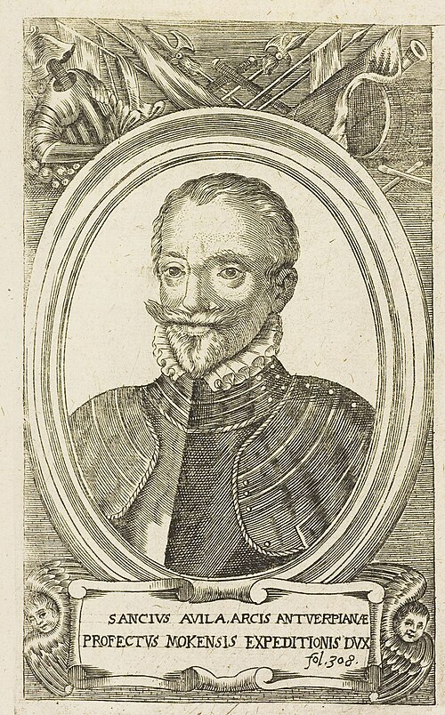
(안트베르펜 약탈의 주범인 산초 다빌라입니다. 그는 그 약탈 사건에 대해 별다른 처벌을 받지 않은 것으로 보이며, 불과 4년 뒤 옛 상관인 알바 공작을 따라 포르투갈 전선에서 싸웠습니다. 그러다 1583년 포르투갈에서 말에 걷어차인 부상이 악화되어 60세 정도의 나이에 사망합니다.) 원래 스페인군은 이런 약탈 사건을 일으킬 정도로 막되먹은 군기의 부대는 아니었습니다. 이런 군기 문란은 알바 공작이 저지대 반란 상황 악화에 대한 책임을 지고 물러난 뒤 후임으로 온 레케센스(Luis de Requesens y Zúñiga)가 약 2년 만인 1576년 3월에 갑작스럽게 병사하는 바람에 잠시 지휘 체계에 공백이 생긴 탓이 컸습니다. 알바 공작의 강경책이 저지대 반란 진압에 효과적이지 않다는 판단 때문에 저지대 총독이 교체된 것이니 만큼, 그 후임자 레케센스는 원래부터 유화책을 들고 나왔고, 그래서 안트베르펜 등의 주요 도시들도 더더욱 스페인 합스부르크 왕실에 충성했던 것입니다. 그런데 그런 충성의 결과가 이런 학살과 약탈이었으니, 저지대 주민들이 받은 충격은 대단했습니다.
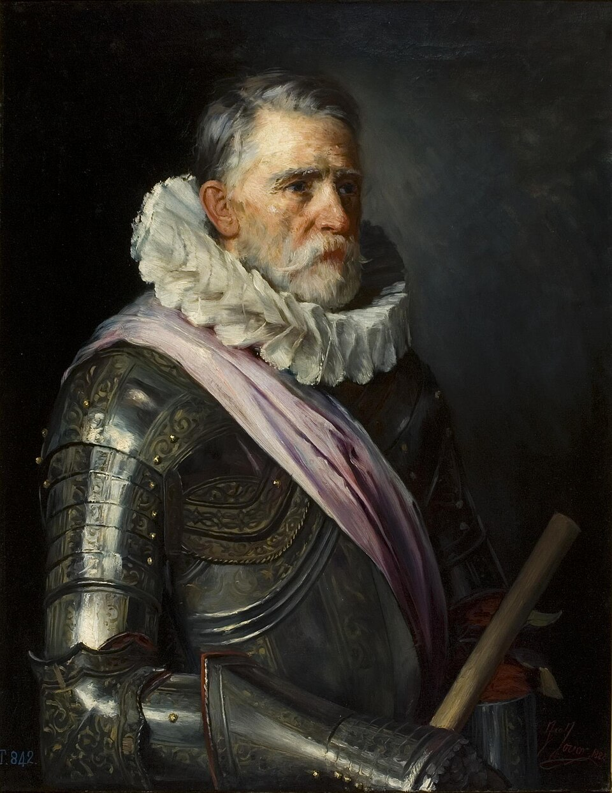
(알바 공작의 뒤를 이은 저지대 총독 레케센스입니다. 초상화도 아주 온화한 얼굴로 그려졌네요. 그의 갑작스러운 병사가 결국 합스부르크 왕실이 네덜란드를 상실하는 결과를 낳은 셈인데, 그의 사인은 불분명합니다만 저지대에 많았던 모기에 의한 말라리아일 확률이 매우 높습니다.)
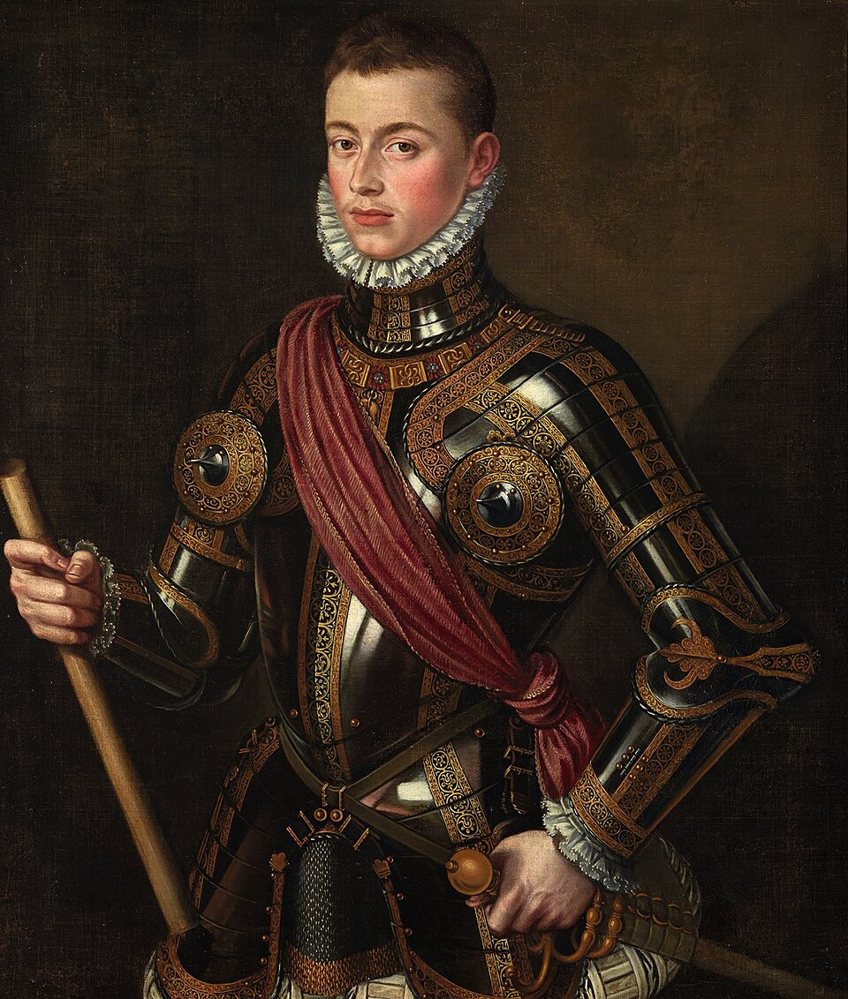
(레케센스의 후임은 더욱 거물로서, 레판토 해전의 젊은 영웅인 오스트리아의 요한(Johann von Österreich, 스페인식으로는 후안 데 아우스트리아 Juan de Austria)였습니다. 그도 부임한지 2년도 안 된 1578년 10월, 갑작스러운 열병에 걸려 급사합니다. 그 역시 모기에 의한 말라리아라고 추정됩니다. 결국 모기가 합스부르크를 쓰러뜨린 셈입니다.)
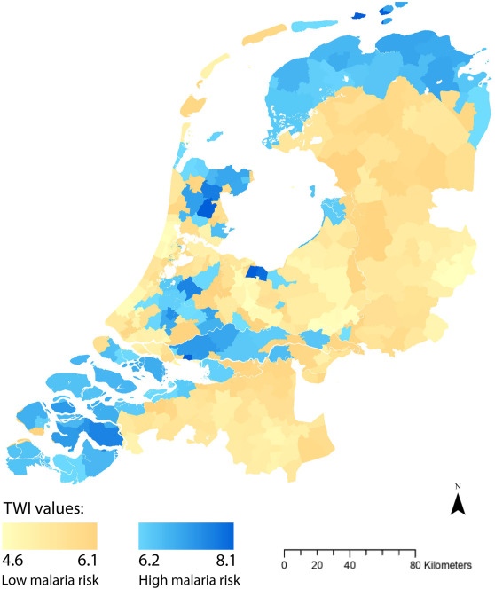
(네덜란드-벨기에가 말라리아가 창궐하는 지역인가요? 적어도 당시엔 그랬습니다. 라인강 하류 저지대 특성상 물이 고인 습지가 많고 당연히 모기가 많았습니다. 그래서 네덜란드 독립전쟁의 승패를 가른 주요 요소 중 하나가 모기로 인한 말라리아였습니다. 이 사진은 18세기 네덜란드의 말라리아 창궐지역을 보여주는 지도입니다. WW2 이후인 1950~60년대에 대대적인 방역 활동이 이루어지면서 비로소 토착 말라리아가 없어졌습니다.)
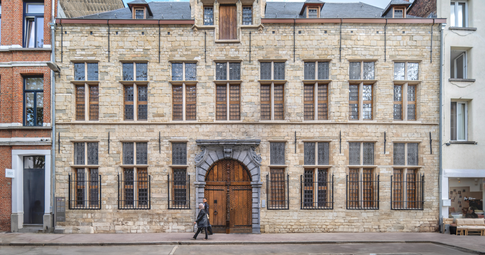
(방역 작업 이후 이제 네덜란드에는 모기가 별로 없을까요? 그럴 리가 있겠습니까? 말라리아는 사라졌지만 요즘도 여름철 모기는 적지 않다고 합니다. 그럼에도 불구하고 네덜란드의 주택들은 모기장이 설치된 곳이 그리 많지가 않아 우리를 놀라게 하는데, 일단 습지 근처가 아닌 대도시에는 모기 수가 많지 않고, 또 유럽 창문 특성상 우리나라 아파트의 미닫이 창문이 아니라 앞뒤로 여는 여닫이 창문 형태가 많아서 모기장 설치가 어렵다고 하네요. 습지 근처의 주택에서는 필요시 여름 한철만 테잎으로 임시 모기장을 붙이는 경우는 있다고 합니다.) 저지대 전체가 입은 충격은 안트베르펜의 약탈이 벌어진 이후 바로 얼마 안 되어 헨트의 평화협정(Pacification of Ghent)으로 나타납니다. 이 조약의 내용은 그동안 반란파와 스페인 충성파로 나뉘어 자기들끼리 분열하고 싸우던 저지대 각주들이, 최초로 일치단결하여 스페인군 철수를 결의하는 것이었습니다. 이 겐트 협정 이전까지, 저지대는 자신들이 하나의 국가나 민족이라는 자각이 전혀 없이 플랑드르는 플랑드르, 홀란트는 홀란트, 브라반트는 브라반트 이런 식으로 나뉘어 서로 경쟁하는 사이였습니다. 1568년 무장 반란이 본격적으로 시작되고 나서도 홀란트와 제일란트 외에는 스페인에 대해 반란에 나서지도 않았고요. 이 헨트 협정에서도 스페인군의 철수를 요구하기는 했지만, 반란파든 스페인 충성파든 모든 저지대 사람들에 대한 사면과 함께 합스부르크 왕권 회복 및 신구교 종교 문제의 평화적 해결을 결의할 정도로, 아직 저지대 사람들이 하나의 국가로 독립하겠다는 의사를 밝힌 것은 아니었습니다.
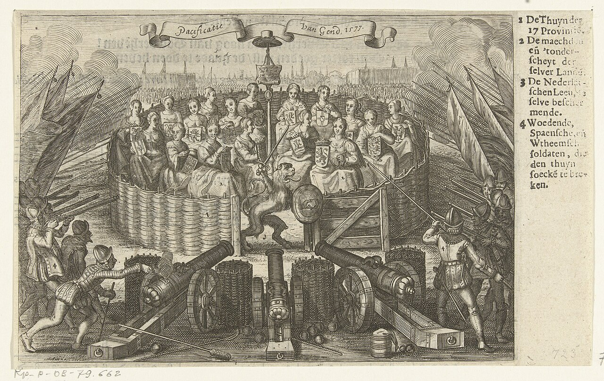
(헨트 평화협정을 우화적으로 보여주는 1626년의 판화입니다. 저지대 17개주를 상징하는 여성들이 앉아있는 울타리를 스페인군이 둘러싸고 있는데 그 울타리 입구를 네덜란드의 사자가 지키고 있습니다.)
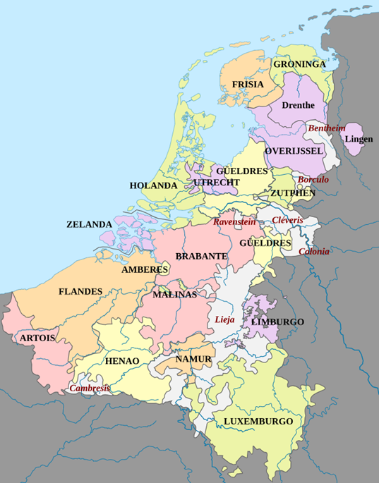
(17개주의 지도입니다. 룩셈부르크도 저기 끼어 있습니다. 제가 고등학교 다닐 때만해도 벨기에-네덜란드-룩셈부르크를 베네룩스 3국이라고 부를 정도로 이 3개국은 사실 하나의 공동체라고 할 수 있습니다.) 그러니까, 1576년 말의 안트베르펜의 약탈로 인해 맺어진 헨트 협정에서는 저지대 17개주가 뭉쳐 하나의 공동체라는 의식을 가지게는 되었으나, 아직 독립 국가를 표명한 것은 아니었고 하물며 네덜란드와 벨기에로 나누자는 생각은 아무도 하고 있지 않은 상태였습니다. 오늘날 관점으로 보면 네덜란드는 신교인 프로테스탄트, 벨기에는 구교인 카톨릭으로 구분될 수 있으나, 헨트 협약에서도 홀란트와 제일란트 외의 지역에서는 카톨릭 신앙을 유지한다는 조항이 삽입될 정도로, 나머지 지역에서는 카톨릭이 우세했습니다. 가령 앞서 약탈당했던 안트베르펜은 오늘날 벨기에 소속이지만 당시엔 카톨릭 세력이 더 우세했습니다. 이 온건한 협약 내용에 대해서는 새로 부임한 저지대 총독 돈 후안도 큰 고민 없이 승인을 할 정도였고, 실제로 불과 몇 개월 후인 1577년 4월, 스페인군은 이탈리아로 철수했습니다. 그러면 이제 모든 것이 원만하게 해결되어 평화가 찾아온 것 아닌가요? 그러나 사람 일이라는 것이 그리 간단하지가 않았습니다. 결국 평화는 깨졌고, 저지대는 합스부르크가 파견한 희대의 명장에 의해 짓밟히게 됩니다. Source : https://ejercitodeflandes.blogspot.com/2019/07/por-tres-ducados-al-mes-los-ingresos-y.html https://en.wikipedia.org/wiki/Conquest_of_Tunis_(1535) https://www.oocities.org/ao1617/life.html https://en.wikipedia.org/wiki/Escudo https://en.wikipedia.org/wiki/Sack_of_Antwerp https://en.wikipedia.org/wiki/Sancho_d'Avila https://en.wikipedia.org/wiki/Luis_de_Requesens_y_Z%C3%BA%C3%B1iga https://en.wikipedia.org/wiki/John_of_Austria https://en.wikipedia.org/wiki/Pacification_of_Ghent https://en.wikipedia.org/wiki/Seventeen_Provinces